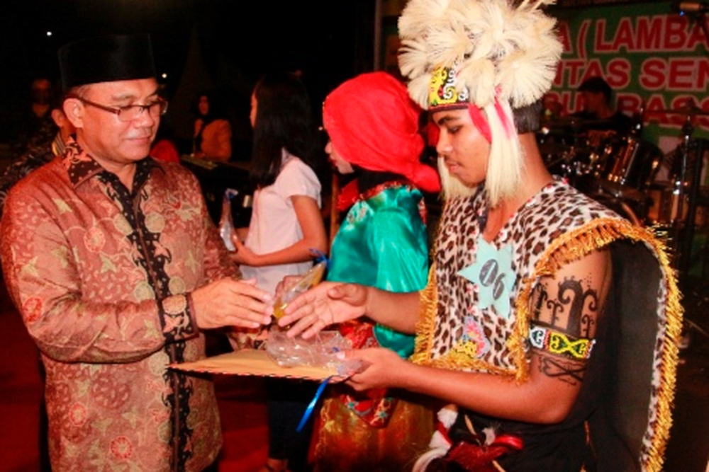

|  |
PROKAL.CO, TANJUNG REDEB - Bupati Berau Muharram, menutup secara resmi gelaran festival seni dan budaya bertajuk Abut Bassar Barrau 2017 yang digelar lembaga banua, bajau dan dayak (Lambada) Kabupaten Berau di Lapangan Pemuda Tanjung Redeb, Sabtu (4/11) malam.
|

|
GUNUNG TABUR – Hutan di Pulau Besing saat ini menjadi salah satu tempat yang diminati oleh bekantan untuk tempat tinggal. Melihat populasi bekantan yang cukup banyak, Kepala Kampung Pulau Besing, Harsono menilai jika hal ini berpotensi menjadi salah satu tempat pariwisata.
"Beberapa tahun terakhir sudah ada yang melakukan kunjungan ke daerah kita untuk melihat populasi bekantan di sini, dan ini menurut mereka sangat menarik," ungkapnya kepada beraunews.com, Selasa (12/09/2017).
|

|
TELUK BAYUR – Hutan Kota Tangap di Kecamatan Teluk Bayur menjadi pilihan masyarakat yang ingin mencari tempat wisata saat akhir pekan. Selain murah dan mudah dijangkau, pemandangan yang disajikan pun tak kalah dengan objek wisata lainnya yang ramai dikunjungi.
Awaludin misalnya, seorang pengunjung ini mengaku, Hutan Kota Tangap merupakan tempat wisata favoritnya bersama sang buah hati saat libur tiba. Meskipun ia juga tak menampik jika hutan yang sudah ada sejak belasan tahun ini baru kembali dibuka setelah mengalami pergantian pengelola.
|